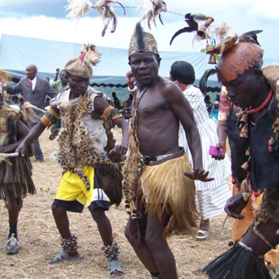
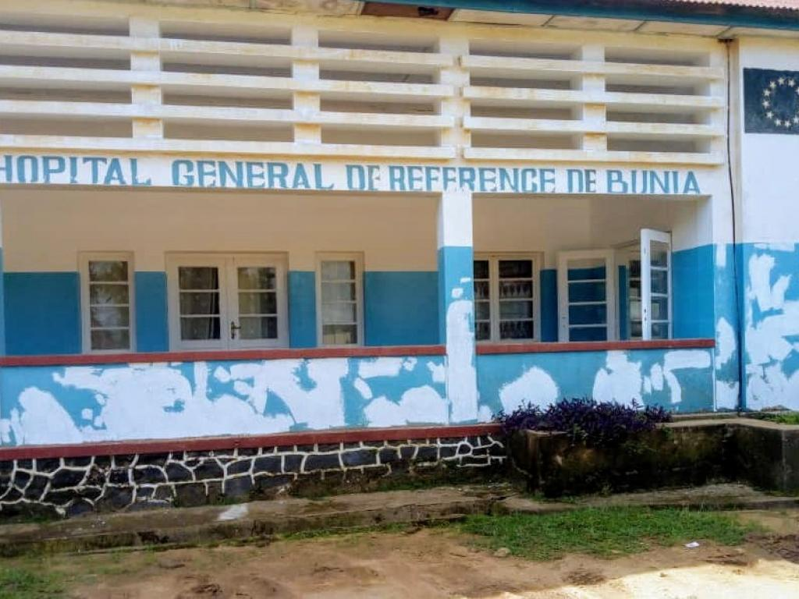
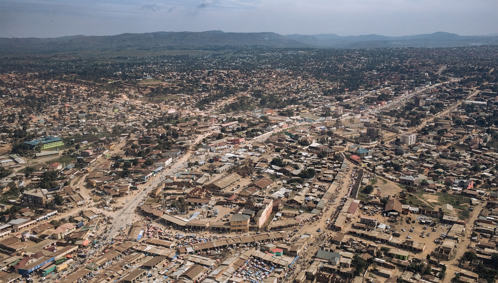
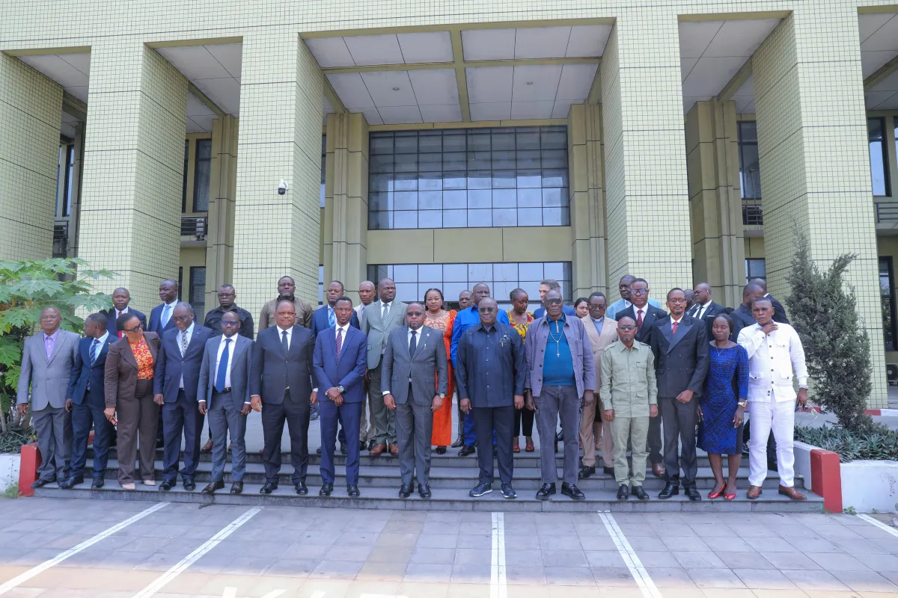
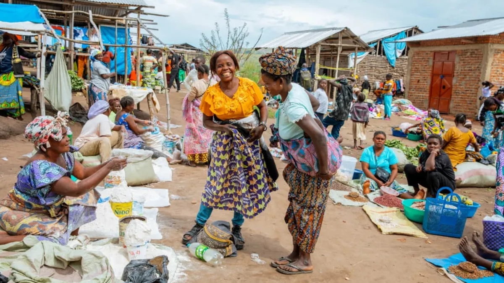

Historical Background
Ituri is a province located in the northeastern part of the Democratic Republic of the Congo. Its history is closely connected to the communities that have lived in the region for generations. These communities have developed different traditions, languages, cultural practices and ways of life.
The region has also been influenced by trade, migration, administration and political changes throughout its history. Its location near Uganda and South Sudan has contributed to connections with neighbouring communities.
Traditional Communities and Heritage
Ituri is home to diverse communities, including the Alur, Hema, Lendu, Ngiti, Bira and other groups. Their traditions, languages, music, food and social practices form an important part of the province's cultural identity.

Traditional Heritage
Traditional ceremonies and cultural practices help preserve the identity and history of communities in Ituri.
Colonial Period
During the Belgian colonial period, the administration introduced changes to local leadership, land ownership and education. These policies influenced relationships and social inequalities between some communities in the region.

Bunia in the Past
This photograph shows a building in Bunia during the colonial period, offering a glimpse of the town's earlier architecture.
Ituri as a Province
Ituri became a separate province following the administrative reorganisation of the Democratic Republic of the Congo under the 2006 Constitution. The reorganisation was implemented in 2015.
Bunia serves as the provincial capital and an important centre for administration, trade, education and other activities.

Bunia, the Provincial Capital
Bunia is the capital of Ituri Province. It plays an important role in administration, commerce, education and public services. The city continues to develop as an important centre in northeastern Democratic Republic of the Congo.

Community Dialogue
Community meetings encourage people to discuss their differences, rebuild trust and work towards peaceful coexistence.

Reconciliation
Peacebuilding activities bring communities together through dialogue, cooperation and shared activities.
Ituri Today
Today, the province continues to pursue development in areas such as infrastructure, education, healthcare, agriculture and public administration. Preserving cultural heritage and promoting peace remain important for its future.
Back to About Ituri